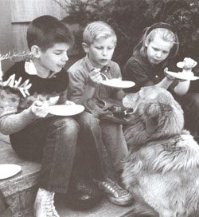
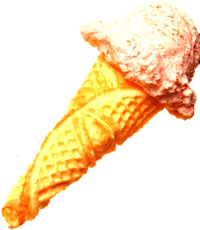
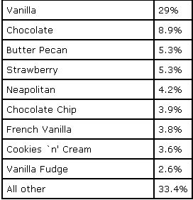

A Midsummer Night's Dream: The Easiest Homemade Ice Cream and Cones Yet-With No Costly Machines or Endless Cranking!
Ice cream parlors are enjoying renewed popularity. Sales are breaking new records. Community service organizations have become partial to old-fashioned ice cream socials. There's no doubt about it, ice cream is the Great American Dessert-more popular than all other desserts combined.
Many of us have come to regard ice cream as a household staple. Citing the 98 percent who enjoy it on a regular basis, zealots go so far as to name ice cream our nation's number-one resource. On average, each of us spoons down nearly 23 quarts per year, making Americans the world's highest per capita consumers and qualifying the United States as the undisputed Ice Cream Capital of the World.
While everyone enjoys ice cream, many people don't know how simple-and inexpensive-making it can be. The truth is, you really don't need those costly gadgets to make wonderful homemade ice cream. You can make it right in your own freezer. The process is called "still freezing," because (as the name implies), it just kind of sits still in your freezer. This is different than an ice cream maker, which continously stirs your concoction and keeps ice crystals from forming. While your best still-frozen dessert will never be as smooth as one that is "stir frozen," making ice cream in your freezer provides a fun adventure.
And there are little tricks to help you smooth out your ice cream texture. For starts, corn syrup, cornstarch, gelatin, and eggs all interfere with ice crystal formation and encourage the incorporation of air. When cream or egg whites are used, they're often whipped before being folded in. Otherwise, the finished mix is whipped after it's frozen firm enough to hold tiny bubbles of air.
Also rapid, even freezing keeps ice crystals small. Encourage fast freezing by using shallow containers, such as ice trays with the slats removed, loaf pans, cake tins, or anything else that holds a layer no more than two inches deep. Cover your filled trays with foil to keep additional ice crystals from forming on the surface as the mix freezes. And plan to serve your stillfrozen creations within a day or so.
You can speed the freezing along by placing trays either at the bottom of the freezer compartment, or on a shelf with coils. If possible, rest them on already frozen foods rather than directly on the shelf. Make sure you place your freezer down to its coldest setting, usually around
0°F (-18°C). Most chest and upright freezers normally operate at that low a temperature. If you use the freezer compartment of your refrigerator, then adjust the setting an hour in advance, and return it to normal after the mixture has frozen.
The beauty of still freezing is that it even lets you make ice cream without electricity. You can, for example, freeze ice cream on picnics and outings to surprise your family and friends. You'll need a picnic chest or other large, insulated container loaded with cracked ice. Or in winter, you can use lake ice or hard-packed snow.
Pour your mix into a freezer-safe tray with a snap-on lid that won't let brine seep in. Ideal containers include Tupperware or Rubbermaid ones de signed for storing cupcakes or pies. With the lid securely in place, bed the filled container in cracked ice combined three-to-one with rock salt.
Pack at least three inches of ice around the sides, top, and bottom of the container. In really hot weather, you may need to drain off brine and add more ice and salt before freezing is complete, usually in ''four to six hours.
Gelatin gives this ice cream extra body, letting you get by with less stirring. If you're among those who feel that the flavor of gelatin overpowers delicate vanilla, omit the gelatin and substitute light cream for the milk.
1 teaspoon plain gelatin
1/2 cup milk
1/2 cup sugar
1/2 cup heavy cream
2 teaspoons vanilla
In a saucepan, soften gelatin in milk. Heat until gelatin dissolves, and stir in the sugar. Let the mixture cool. Then pour it into the freezer, and chill until slushy. Whip heavy cream into soft peaks, and then add vanilla. Beat frozen mixture, fold in whipped cream, and pour into a freezer tray or mold. Freeze firm. Yield: about 1 quart.
This recipe takes advantage of two characteristics of evaporated milk-its slightly caramelized flavor and its ability to whip up light and fluffy. For a delightful coffee undertone, dissolve 1 t instant coffee in the 1/4 C evaporated milk. To make Caramel nut ice cream, fold in 1/2 C finely chopped pecans with the whipped milk.
1/2 tablespoon butter
1/3 cup brown sugar
2 tablespoons water
1 cup evaporated milk
1 teaspoon vanilla
In a small saucepan, melt butter. Add brown sugar and water, and stir until sugar dissolves. Bring mixture to a boil, and then boil for 3 minutes. Stir in 1/4 cup evaporated milk. Cool and add 1 teaspoon vanilla. Chill well, and then whip 3/4 cup evaporated milk. Fold in sugar mixture. Freeze firm, 3 to 4 hours. Yield: about 1 quart.
Fresh cherries add crunchy bits of tasty fruit to this confection. Canned cherries are already pitted, but they're neither as crunchy nor as easy to chop. Whether you use fresh or carped, select sour cherries such as Queen Anne, which are more flavorful than sweet ones like Bing. This recipe will also make peach or apricot ice cream with the simple substitution of the appropriate fruit.
2 cups sour cherries
1 cup sugar
2 cups heavy cream
Pit and chop cherries, and then add sugar. Let stand for 20 minutes. Stir in 1 cup of heavy cream. Pour into freezer tray, and freeze slushy. Turn into large bowl and beat until smooth. Whip into soft peaks and add the rest of heavy cream. Freeze firm, 3 to 4 hours. Yield: about 1 quart.
Fussy little eaters don't take much coaxing to chow down on a breakfast of fortified cereal topped with egg-rich French vanilla, garnished with fresh strawberries or sliced bananas. Or serve up a scoop of this specially formulated breakfast ice cream with the raisins, honey eggs, and high protein cereal already incorporated.
1 egg yolk
1/4 cup sugar
1/4 cup honey
1/2 tablespoon flour
1 cup milk
1 teaspoon vanilla
2 C half and half
1/2 C chopped raisins
3/4 cup high protein cereal
Lightly beat egg yolk, and add sugar, honey, and flour. Next, heat milk in double, boiler. Pour a little milk over yolk mixture stir mixture into remaining milk. Stir a heat until mixture coats a metal spoon Strain and chill. Add vanilla and half-ai: half. Then pour into freezer tray. Free slushy. In a large bowl, beat until smooth. Stir in raisins and cereal; freeze firm, 3 to 4 hours. Yield: about 1 quart.
The most popular way of eating ice cream is straight out of a cone. We eat billions per year, making them a veritable American in stitution. They are as practical as they are crisp and tasty, and if you don't have a waffle-cone iron, you can still make them on a cookie sheet or between the flat sides of a reversible teflon waffle iron if it closes tightly.
Your first few cones may look a bit crude, but don't despair-after two or three, you'll learn to work swiftly and smoothly, achiev ing near perfect cones times after time. For slower cooling cookies, gently stuff bits of crumpled waxed paper into the openings to keep them from collapsing until they firm up.
Your cones will be more uniform if you shape them over a cone form or metal cream horn, available at gourmet cookware shops. Three is a good number of horns to have, since that's how many cone cookie you can bake on the average-sized sheet. As soon as the cones cool enough to hold their shape, remove the horn for reuse on the next batch. Cones keep well for two or three days at room temperature or for several weeks in an airtight container in the freezer.
Vary the flavor of these delicate cone by adding a pinch of cinnamon or nutmeg, or by substituting almond, orange, lemon, or any other extract for the vanilla.
3/4 stick butter
1/2 cup sugar
1/8 teaspoon vanilla
1/2 tablespoon water
3 egg whites
1/2 cup flour
Beat butter at high speed until fluffy, and gradually add sugar. Beat again until fluffy, usually about 4 minutes. Add vanilla and water. Beat in egg whites, one at a time. Add flour and mix until smooth.
Let batter set for 2 hours at room tempera ture. Grease baking sheets, and outline three 6" circles on each sheet. Place 1 1/2 tablespoons batter in center of each. With the back of a spoon, spread batter to fell circle. Bake at 425°F (220° C) until lightly browned. Using wide pancake turner, remove from sheet and roll on at a time. If cook ies cool and become too stiff to work, return to oven a few seconds to soften. Yield: 8 cones.
These slightly chewy cones develop an in teresting textural pattern during baking. Use walnuts, pecans, or toasted almonds, or leave out the nuts for plain cones, but you'll get fewer of them.
1 egg
3/4 teaspoon vanilla
3 tablespoons water
3/4 cup light brown sugar
1 1/2 tablespoons melted butter
1/2 cup flour
3/4 cup finely chopped nuts
Combine egg, vanilla, water, brown sugar, and butter. Beat until sugar dissolves. Add flour and beat until smooth. Stir in nuts.
Grease baking sheets well and sprinkle with flour. Outline three 6" diameter circles on each sheet. Place 2 1/2 tablespoons batter in the center of each, spread evenly with a spatula or bottom of a measuring cup, taking care to leave no holes. Bake at 300°F (150°C) for 15 minutes until firm. Remove from oven and loosen, then bake 3 minutes more, until lightly brown. Remove from oven, cool slightly, and roll one at a time. If cookies get too stiff to work, return sheet to oven and heat for 1 minute. Yield: 8 cones.
These cones take a bit longer to firm up than most, giving you more time to get the shape right. For less sweet cones, use wheat germ in place of coconut. To make malted cones, substitute barley malt syrup for all or part of the honey.
1/2 cup honey
2 tablespoons butter
1/8 teaspoon salt
1 egg
1/2 cup whole wheat flour
3/4 cup coconut
In a small saucepan, over low heat , combine honey, butter, and salt. Stir until butter dissolves, and then remove from heat. Beat in egg and flour. Stir in coconut. Grease baking sheets well and sprinkle with flour. Outline three 6" diameter cir cles on each sheet. Place 24 tablespoons batter in the center of each, spread evenly with the back of a fork. Bake at 325°F (165°C) for 15 minutes, until the edges are brown. Remove from oven, cool slightly, and roll one at a time. If cookies get too stiff to work, return sheet to oven for 1 minute. Yield: 8 cones.
The more ice cream you make, the more you'll look for that one perfect recipe. But clearly, each of us has a different idea of what constitutes perfection. One of the nicest things about making your own ice cream is that you can alter its characteristics to suit yourself.
When it comes to frozen treats, anything goes. So be bold. Consider this a guideline for devising recipes that are distinctly yours. Tasting, evaluating, adjusting, and tasting again-it's all part of the exciting adventure of making your own ice cream!
Gail Damerow is the author of Ice Cream! The Whole Scoop (Glenbridge) in which this material appears. It is available from , Pathway Book Service, Gilsum, NH 03448 for $27.95 postpaid or by calling 800/345-6665. Her book has been nominated for several awards, including a James Beard.
Source: The Latest Scoop, International Ice Cream Association, Washington, D.C., 1989.
|
 |
 |
 |